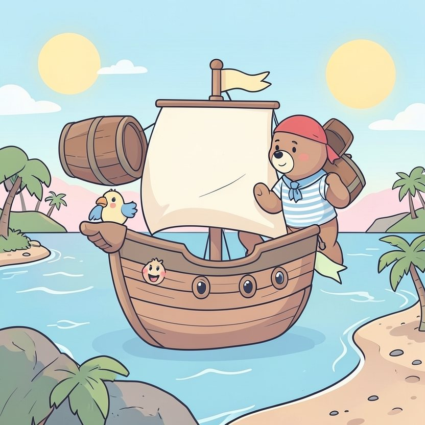

Titistoire › Les Étoiles (3-6 ans)
Nestor, le pirate qui disait toujours oui
Une histoire de Nestor l'ourson pour parler de : savoir dire non.

▶ Écouter et regarder l'histoire
Gratuit, sans inscription : la voix lit, le texte suit mot à mot, les images tournent comme dans un album.
Le texte de l'histoire
À bord de La Coquille navigue un pirate qui dépasse tous les matelots de deux bonnes têtes. C'est Nestor l'ourson. Il a des pattes larges comme des rames, et un cœur moelleux comme de la brioche.
Nestor a un mot préféré, un petit mot tout rond : « oui ». « Nestor, tu portes mon tonneau ? » « Oui. » « Nestor, tu frottes le pont à ma place ? » « Oui, oui. »
C'est que Nestor redoute une chose, une seule : qu'on ne l'aime plus s'il répond non.
Alors, du matin au soir, ça résonne sur le pont : « Nestor ! » « Oui ! » « Nestoooor ! » « Oui, oui ! » Il porte, il astique, il tire, il hisse.
Même Sardine, la toute petite souris, s'y met. « Nestor, tu me gratouilles le dos ? Juste là. Plus haut. Plus bas. » Il se penche, patient. « Oui, oui, oui… »
Le soir, sa tartine de miel attend encore sur un tonneau. Les dauphins, il n'a pas eu le temps de les regarder. Nestor s'assoupit debout, appuyé sur son balai.
Une nuit, la capitaine Mirabelle lui tend une grosse clé dorée. « Nestor, je te confie la cale au trésor. Tu n'ouvres à personne, tu m'entends ? Je compte sur toi. »
« Oui, capitaine ! » Ce oui-là lui gonfle la poitrine de fierté. C'est un oui qu'il a choisi.
Il s'adosse à la lourde porte, la clé autour du cou. La lune monte, toute ronde. Dans les hamacs, ça ronfle en chœur.
Flip, flap… Une ombre grimpe le long de la coque et enjambe le bastingage. C'est Griffard, le chat pirate, avec son plus beau sourire. Un sourire plein de dents.
« Bonsoir, mon gros ami ! susurre-t-il. Quel dommage… tout seul, de garde, sans rien à grignoter. Tiens, je t'ai apporté du miel. Entre amis, on partage, pas vrai ? »
« Hmm… oui… », soupire Nestor, le museau sur le pot. Le miel embaume. Et Griffard l'a appelé son ami.
« Et entre amis, ronronne Griffard, on se rend de petits services. Ouvre-moi donc cette porte. Juste pour jeter un œil. Tu ne vas pas dire non à un ami ? »
Le « oui » lui monte déjà dans la gorge, comme d'habitude. Sa patte effleure la clé. Griffard se frotte les coussinets.
Mais au creux de son ventre, il y a autre chose. Une petite boule dure, qui souffle que ce n'est pas bien. Nestor ferme les yeux et l'écoute. Elle a une voix minuscule, mais elle insiste, elle insiste.
« N… », commence Nestor. Le mot reste coincé. Il n'a pas l'habitude, voilà tout. « Nnn… » Griffard tend l'oreille, tout sourire : « Tu disais ? »
« NON ! » C'est un non énorme. Un non d'ours. Un non qui fait trembler les voiles et envoie le bandana de Griffard valser par-dessus bord.
« Non. Tu n'es pas mon ami. Un ami ne me demande pas de trahir ma capitaine. Reprends ton miel, et file ! »
Griffard n'a jamais vu un ourson aussi grand. Il recule, il glisse, il dégringole dans sa barque et rame, rame si vite qu'il en oublie une de ses bottes.
L'équipage accourt en pyjama, lanterne à la patte. Penaud, Nestor regarde ses pieds. « J'ai crié… J'ai dit non… Vous êtes fâchés ? »
La capitaine Mirabelle pose une patte sur son épaule. « Fâchés ? s'étonne-t-elle. Moussaillon, ton non vaut de l'or. C'est même grâce à lui qu'il nous en reste ! »
Le lendemain matin, Nestor croque sa tartine de miel quand ça recommence : « Nestor, tu portes mon tonneau ? » Il prend le temps de réfléchir. « Hmm… Oui. Celui-là, je veux bien. » « Nestor, tu frottes le pont à ma place ? » « Non. Mais je veux bien le frotter avec toi. »
Et le plus étonnant, c'est que personne ne l'aime moins. Sardine jure même qu'elle l'aime un peu plus. Elle a appris à se gratouiller le dos toute seule, avec une fourchette.
Ce soir-là, accoudé au bastingage, Nestor savoure sa tartine de miel jusqu'à la dernière miette. Et il regarde bondir les dauphins, longtemps, parce qu'il en a envie.